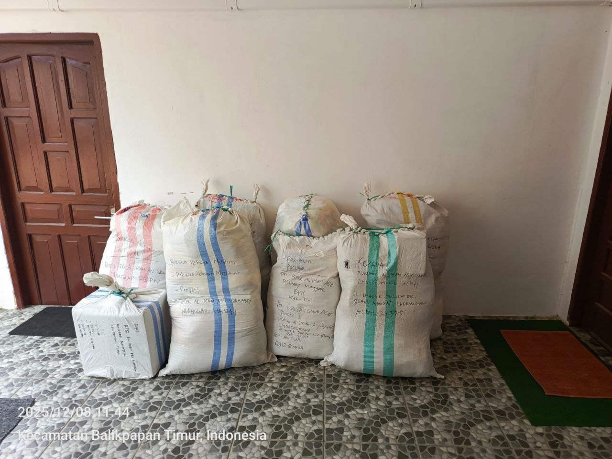
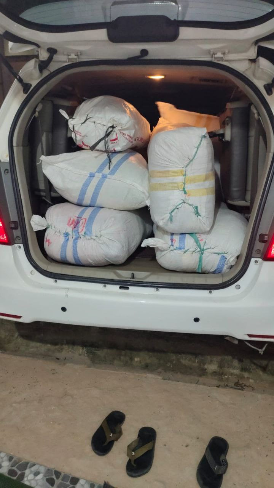
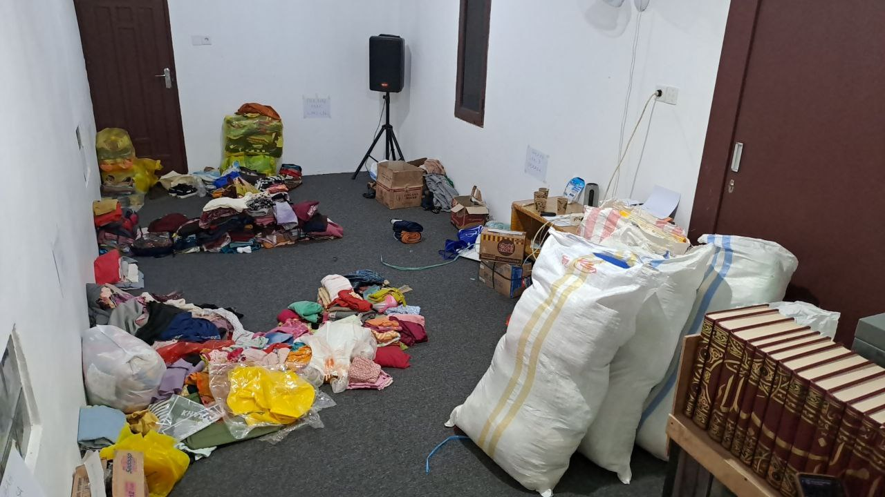
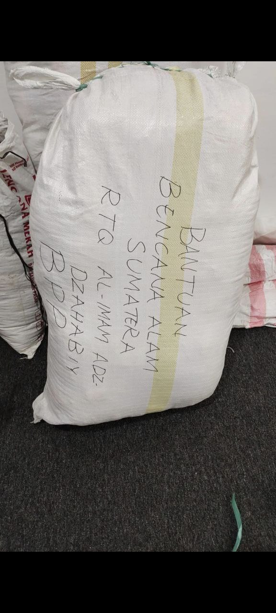
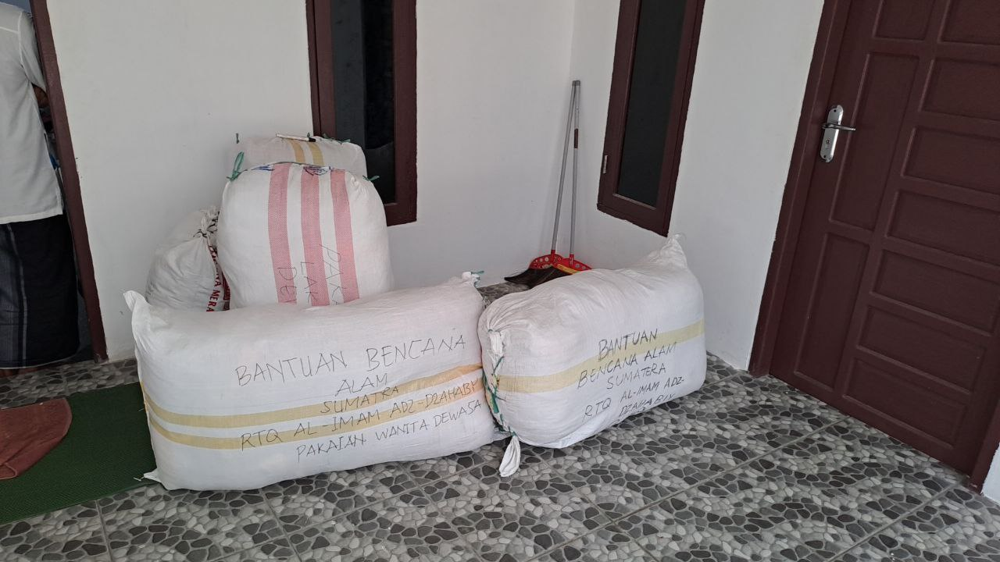
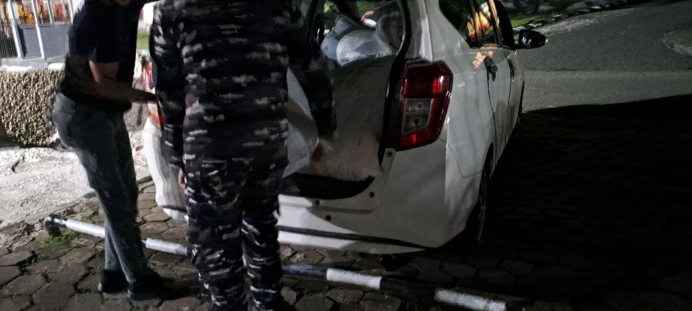

Laporan penutupan donasi dana dan pakaian untuk membantu saudara-saudara kita yang terdampak bencana alam di Sumatra Utara dan Aceh.

Alhamdulillāh, dengan pertolongan Allah Subhānahu wa Ta'ālā, telah terlaksana pengumpulan dan penyaluran donasi untuk membantu saudara-saudara kita yang terdampak bencana alam di Sumatra Utara dan Aceh.
Bersama ini kami sampaikan laporan penutupan donasi sebagai bentuk pertanggungjawaban kepada seluruh para muhsinīn yang telah menitipkan bantuan melalui RTQ Al Imam Adz Dzahabiy.
Donasi pakaian telah ditutup pada 7 Desember 2025.
Donasi dana telah ditutup pada 13 Desember 2025.
Setelah dilakukan penghitungan ulang, total dana donasi yang berhasil terkumpul adalah:
Total Donasi Dana Terkumpul
Dana tersebut kemudian disalurkan secara bertahap kepada pihak-pihak yang membutuhkan.
| Tahap | Jumlah |
|---|---|
| Penyaluran Tahap 1 | Rp14.560.084 |
| Penyaluran Tahap 2 | Rp9.122.000 |
| Penyaluran Tahap 3 | Rp11.230.000 |
| Penyaluran Tahap 4 | Rp7.408.000 |
| Penyaluran Tahap 5 | Rp162.431 |
| Total Pengeluaran | Rp42.482.515 |
Dana donasi tersebut telah disalurkan kepada 4 ma'had Ahlussunnah, yaitu:
Dengan demikian, seluruh dana donasi yang terkumpul telah tersalurkan.
Selain donasi dana, para muhsinīn juga memberikan bantuan berupa pakaian.
Total Pakaian yang Terkumpul
| Tahap | Jumlah |
|---|---|
| Penyaluran Tahap 1 | 9 kodi |
| Penyaluran Tahap 2 | 8 kodi |
| Total | 17 kodi |
Alhamdulillāh, seluruh pakaian yang terkumpul telah dikirimkan ke Sumatra melalui jalur TNI AL.
Berikut beberapa dokumentasi kegiatan pengumpulan dan penyaluran donasi untuk saudara-saudara kita yang terdampak bencana di Sumatra Utara dan Aceh.





Untuk melihat detail selengkapnya mengenai laporan dana donasi dan bukti penyaluran, silakan membuka tautan berikut:
Untuk informasi lebih lanjut mengenai laporan donasi, dapat menghubungi:
Jazakumullāhu khairan atas bantuan dan partisipasi seluruh para muhsinīn.
Semoga Allah 'Azza wa Jalla menerima seluruh amal kebaikan kita, melipatgandakan pahalanya, dan membalasnya dengan Jannatul Firdaus.
Āmīn yā Rabbal 'ālamīn.
Waktu Laporan:
25 Desember 2025, pukul 12:06 WITA
TTD Divisi HUMAS
RTQ Al Imam Adz Dzahabiy